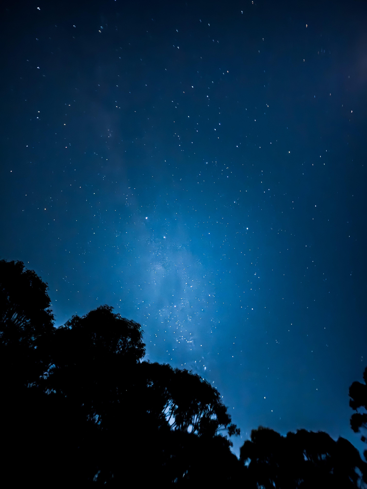
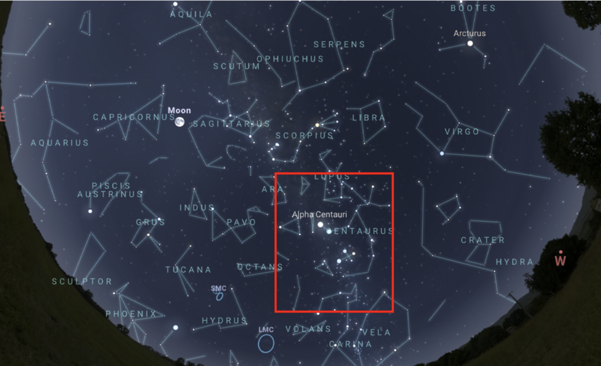
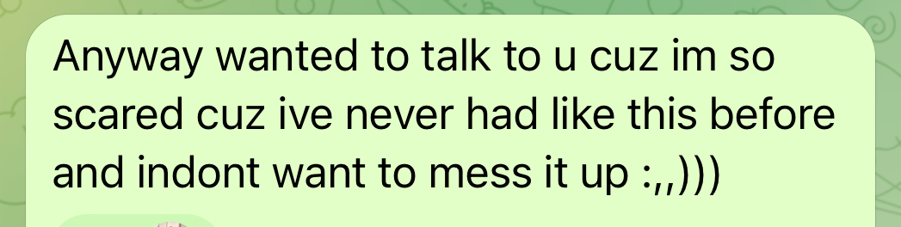

I hate always coming back here only when I am emotionally vulnerable or unstable. Nevertheless, here we are again with the urge to start writing down stuff again because these feelings deserve to be materialized and known.

I took this photo last July 2024 shortly before I flew back to Manila after 18 months in Sydney. It’s one of my most favorite photos I ever took. Maybe because it’s the first time I took a picture of the Milky Way. The picture was taken in a park in Rouse Hill. I remember it clearly—it was one of my late-night, pitch-black “horror walks” in the middle of a cold winter night. I was walking in this open area of the park. When I looked up, the first thing I noticed was the crux constellation or the Southern Cross—the set of stars shown predominantly in the Australian Flag and almost any other flag of the countries in the southern hemisphere. Looking more closely, I could almost see the milky way and the other beautiful stars scattered all around it. I immediately grabbed my phone, turned on night mode, set the exposure to 10-seconds, and took the photo. Opened the lightroom, made some tweaks, and viola!
I was awed by the vast expanse of space. How miniscule we are. On that night, you really felt it. Taking a picture is one thing, but to be there and feel everything is something different. It’s different when you’re there. The cold winter evening, the wind hitting your face as if it came directly from the stars, and the feeling as if it’s there, and it’s tangible.
Looking back at this photo, that night, it felt like destiny or something was afoot. I don’t know what it is but I wasn’t ready for what was to come.
I don’t believe in fate, destiny, nor any “stars”. I always say: if the stars tell you to go left, what’s stopping you from turning right? I’d say we are the masters of our own fate and it’s only up to us to do something about it. That’s why I’m here where I’m at right now. That’s why I’m in Sydney.
But when I do look at the picture, I can’t help but feel that there is a being that has a firm grip over my life—all so while keeping my eyes shut from it. It’s an inescapable feeling, and I always felt that it’s there. A guiding force which influences my behavior no matter how illogical it is.
Going to Australia doesn’t make sense, but I still did. Starting businesses is a risk, but I still did. My buying behaviour has been very erratic, but somehow, I always have enough for exactly what I need. I have a mentor who I just mentioned in passing that I want to do Marketing, and now my entire fate lies with him. I don’t know. It’s just, I make all of these erratic decisions which don’t make sense, but somehow it all works out in the end—it’s as if there was something making these decisions for me.
I always look back on the paths I took, the destiny which befalls me, and how our fate prohibits us from ever living truly free.
To cut into things, I met someone softly after taking this photo. We met as that month was coming to a close. Connected and chatter, felt some stuff, and went on from there. The fate which prohibited me? my PTSD and feelings of neglect, and abandonment disallowed me (and maybe us) from truly “loving” one another. Initially, our scars came out. I said words out of fear of abandonment. We disconnected and argued for over a month. But during the process, I spontaneously bought flight tickets back home just to see her (another thing which never made sense in the first place.) We met and dated finally exactly 6-months from when we first met. We kind of hit it off, but the scars were still there and we failed to talk about it with one another. Eventually these unspoken scars and fears reveal itself again, and to the stars’ will — we broke it off yet again.
Before I delve into this deeper, let's analyze the photo first. I’ll suck-up my pride and do a deep astrological dive over the significance of this event. I will consult a proven expert in this field—ChatGPT.

Here are the constellations present at the time and date the picture was taken. The frame of reference of the photo was at the core of the Milky Way just as Centaurus. There are six zodiac signs present on that day: Aquarius, Capricornus, Sagittarius, Scorpius (Closest to the frame of reference), Libra, and Virgo.
Here’s what ChatGPT has to say about it:
“On that winter evening in Sydney, the sky held:
>Scorpio near the Milky Way — emotional intensity and transformation
>Sagittarius — seeking purpose, truth, meaning
>Capricorn & Aquarius — ambition and future vision
>Libra & Virgo — balance, refinement, healing
That sky, especially considering you felt moved to take a photo of it, speaks to a moment of awakening, whether conscious or subconscious.”
Ok, cool. Uhm. Honestly, it’s very ambiguous. Ok, more honestly; I really tried. I tried to read into it but all I get is boiled-up frustrations over fate and destiny. I mean, it’s not a personal reading right? How can you be so sure of it? I don’t know. Maybe I just never found comfort with this. Let’s go over what happened after I took the photo and try to make sense of it.
I went through a rather turbulent time the past few weeks.Mostly on how I measure my self-worth and the circumstances which lead to who I am today. These circumstances and paths I took eventually affected that relationship I was talking about. The stars’ curse per se where if I had different circumstances in life, would I have loved differently to someone I dearly wanted to have?
At this point, I can’t help but think: why did it all happen? There must be a reason why it happened? The stars must’ve been telling me something the night I took that picture. Everything happened by coincidence. My friend wasn’t on-top of my life to meet, but somehow we ended up doing so. It was supposed to be a lunch meetup, but my friend just suddenly wanted me to meet his cousins? She wasn’t supposed to go outside to meet me that day, but her other cousin insisted she do. Why did I suddenly have an urge to just chat with her long after we met? Why did I just decide to just go for it after 24 years of not even looking for a relationship? I can’t even recall the day I bought tickets back home again spontaneously just to see her, it just happened. When I was there, what was supposed to be a 5-day trip got extended due to my flight being cancelled at exactly the right time. Why didn’t I make use of the time we had properly? We didn’t even say good-bye properly. Why did I do so many wrong things in the end? I don’t know. Everything’s not supposed to happen but it did. If it’s for a certain calling, then why are we in this position right now?
What happened was this: I failed to make her feel according to how she wanted to be felt. And what’s worse is that I agree with her. The reasons behind my failure are the circumstances in my life that I was talking about—the curses within me; the road I’ve travelled of fear, abandonment, and neglect. I simply do not know how to “love.”

27 Sept 25: When my friend found out about us. My fears were there even from the start.
I never knew what “love” was. I thought it was something you just fall for someone - a selfless act. But I was never taught it. My parents were basically non-existent. My mom seems cursed to be single for her entire life with a history of abusive relationships; while my dad was a cheater. What’s more, both of my mom’s parents are practically cheaters too. Unmarried, and my grandfather was practically cheating with his original wife. Indeed, it was a very dramatic funeral with the original wife being there with us. My point is, what is love? How do you love? It’s a puzzle that I never seem to solve. Nevertheless, these traumas taught me to really be careful with who I pick. I will never forget those nights my mom would scream and cry on the phone towards her former lovers—some would even stalk her to the point that we had to leave the house. I never settled for anything less from that point. But why was this different?
I had a few potential relationships before her, with only one whom I was absolutely sure of. I guess I should’ve at least pursued the others without fear of any future because those would’ve at least taught me how to love. I wish, because this one would’ve been worth it.
Now that's why I can’t make anyone feel. But why can't I feel?
Quite frankly no one has ever made me feel anything—or any opportunity to do so. Other than yearbook quotes (which I won’t count because it was somewhat mandatory.) I’ve never been given any heartfelt personalized letters. Not for birthdays, graduation, or any event. The closest I got was when I was concluding my Maccas job, the two managers (ily Lily and Zara), gave me a letter. During that last day, I just clocked-off, made myself a muffin, and ate for a bit in the crew rest room. I really wasn’t expecting anything to happen because nothing special ever happens on any special days. Next thing I know, Lily came running to me with Zara on her phone. They went above and beyond to write me a letter and give me some parting gifts.
I was paralyzed, stunned, and shocked. I had feelings which I never felt before. No one has ever harboured any feelings, gratitude or belonging to or for me. My relationships or friends - they just come and go. We talked, hit it off for a bit, then eventually parted ways and mind our own business.The moment when I received the letter, I wanted to cry. But I can’t. I was too busy processing what kind of feeling that was and I failed to live in the moment. I was literally speechless. Zara and Lily were just there seemingly waiting for me to say something nice, but literally I had no words. Paralyzed and confused, the only words I was only able to cough up was: oh, wow. But deep down, I wanted to cry.
Now on abandonment and neglect: I am very distrustful of people. I never trusted my mother, and I never trusted even my closest friend. Intimacy would’ve been a disaster for me, and it backfired at me when it came to her. There were times where I would fail her for small, yet important reasons and she would grow distant. This distance or detachment touched on my fears. When she did decide to be vulnerable to me on it. All I can say was: “Honestly you’ve been very detached from me lately, we should just stop this then.” It was the shittiest reply I could think of. She was very vulnerable and I turned her down. I feared that she grew tired of me, I feared that she was seeing someone else. But she just had deep-rooted issues with herself that I didn’t understand yet. That was the first disaster which led to a cascade of mistrust amongst each one of us.
I never understood this until now. I never showed that I understood her. I have a better understanding of her and there are lots of words and actions that I should’ve said before which could’ve made a difference. When we first started talking, she really trusted me. She really looked at me as if “this could be it.” I’m crying right now thinking about how much I failed that person. I wish we never ran. I wish we'd taken the time to understand one another first. I wish there was another chance now that I understand where she is.
Now back to the stars’ curse.
What did the photo mean? What’s the significance of that day to my fate?
“It’s time to transform, to seek truth, to grow up in a new way. There will be pain — but it’s part of your becoming. Trust the journey. Trust what you’re called toward.”
The energy in the sky reflects a moment full of alignment between transformation, destiny, emotional growth, and karmic relationship themes. Meeting her was likely a key turning point — not just romantically, but for your evolution.”
Perhaps there was some meaning: a transformation. Maybe it’s the realizations about love, loving, and understanding which I made along the way. Understanding these emotional nuances which I’ve never quite understood before. But why is it that the entire experience just made me think: “I’m not worthy of loving after all.” So I might as well not seek it. What was the point in all of these? Was I always destined to just become a fuckboy? I want something meaningful.
I had always wished that my life and fate had always been intertwined to someone else’s. It’s my biggest longing ever since I was a child. I’ve always been neglected, ignored, and not seen. But I was able to push through because I truly believed that there was a reason for everything, that I have a higher calling. The thought of my fate being intertwined with something or someone is probably why I’m able to live this long and my only sense of purpose.
But do I, really?